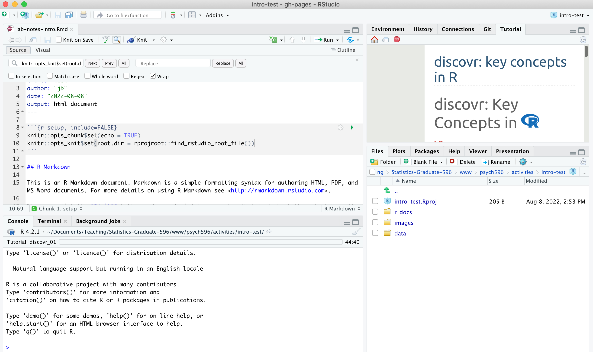

updated Jan 24 2024
if you have access to an SPSS license, great! Follow installation and licensing instructions from wherever you got the license (e.g., software.rutgers.edu) - we will be using version 29.0 in class.
if you do not have a license you can follow these instructions to use Rutgers Virtual Lab inside a browser window
screenshot of a Virtual Computing Session
R is a statistical programming language. RStudio is a development environment built to make it easier to run, view, and document with the R language. R and Rstudio are open-source, so you can install them on your own.
if you already have R and Rstudio installed, make sure you have an R version 4 or greater (e.g., 4.0.4 or higher version number), and RStudio 1.4 or greater. We will use R version 4.2.1 and RStudio version 2022.07.1
getRversion() in the RStudio consoleTo install (or update): Follow this link to Garrett Grolemund's online book Hands on Programming with R to find download links and specific installation instructions for Mac, Windows, and Linux
Much of what we will do in R relies on packages, which are openly available extensions to the R programming language. Packages contain functions, data, and documentation that you can use as needed by installing a package and loading it.
Right now, we'll install the majority of the packages that we will use this semester. By installing them all now, we will all have similar versions of each package, which will help with troubleshooting throughout the course. If you already have some of these packages installed, you can rerun the install command to (potentially) update the installed version, or you can continue with your environment as is (if you are comfortable managing package versions in your own way).
If you haven't already, start RStudio. Next, in the Console window pane type the install.packages() commands below one line at a time, being sure to match upper/lowercase (pay attention to the red text output after each command in case there are errors):
Be sure not to confuse the "Console" Pane with the "Terminal" Pane!!!
install.packages("remotes")
install.packages("learnr")
remotes::install_github("profandyfield/discovr")
install.packages("tidyverse")
install.packages("Hmisc")
install.packages("afex")
install.packages("lme4")
install.packages("optimx")
install.packages("effectsize")
install.packages("correlation")
install.packages("ggfortify")
install.packages("kableExtra")
install.packages("wesanderson")
screenshot of the Console Pane 
This video (linked in the Syllabus also) describes the workflow that we will use in class. These are the basic steps in the workflow:
1. Create a folder containing an RStudio project (*.Rproj file) for the lab activity each week. This week, make a folder called "intro-essentials" and then use File -> New Project -> Existing Folder to create an R project file in the "intro-essentials" folder. Open the project in your current session.
2. Inside the folder you made for the project, create new folders called "data", "r_docs", and "images". You can create the folders through the Files tab in the lower right RStudio Pane, or as you normally would in Windows or MacOS.
3. Create an R Markdown file called "lab-notes-intro" and save it in "r_docs" folder. Use File ->New File -> R Markdown... then Save (on the RStudio menu). The markdown file will open in the top left RStudio pane - this is where you will write your R code and where you will take notes. When you reach a point where you want to share the document you can use the Knit option to generate a report containing your code, notes, and visualizations.
4. Delete the template text starting from "## R Markdown" down to the end of the file.
5. Write your code inside code "chunks", and run chunks in order when writing/testing code. When you want to generate a report (e.g., an html file that you can share), use the Knit button.
- the start of a chunk is designated by a line that starts with 3 backticks ` followed by {r chunk-name}. The end of a chunk is designated by a line with 3 backticks.
- in the "setup" code chunk, add this line to set the working directory (see here for explanation):
knitr::opts_knit$set(root.dir = rprojroot::find_rstudio_root_file())
6. Write your notes above or below code chunks. Characters like # and * are used for markdown-style formatting of the report as described in this pdf.
When you have set up your project, your RStudio environment should look something like this:

Go to the Tutorial Pane (top right) and click "start tutorial" for the "discovr: key concepts in R (discovr_01)" tutorial. it will take a minute or two to load - use the "pop-out" button  to open the tutorial in a larger view.
to open the tutorial in a larger view.